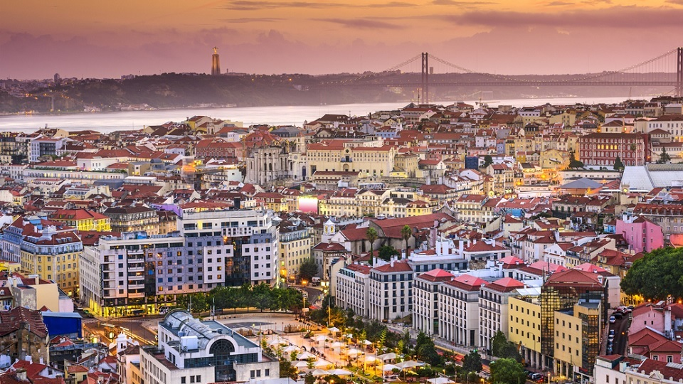
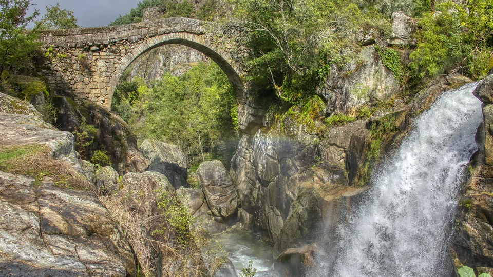

Douro Minho
Douro Minho
Estremadura
 Madeira
Madeira
Trás dos Montes
 Douro MinhoMadeira
Douro MinhoMadeiraQuando pensa numas férias em Portugal só lhe surgem imagens de sol e mar?
Ou um passeio de barco por entre os belos canais da ria de Aveiro?
Ou um passeio de barco no rio Guadiana, com vista para a cidade de Alcoutim?
Portugal é um país muito rico a nível de Gastronomia sendo o mar a característica da culinária Portuguesa com os melhores peixes do mundo e sempre fresco, tal como o marisco que abunda ao longo do litoral Português. Alguns pratos de Peixe que se destacam em Portugal são as Cataplanas, Caldeiradas, Bacalhau, entre outros.
Portugal também é muito rico a nível de Carne com excelentes carnes de Norte a Sul de Portugal, seja de Vitela, de Porco ou de Cabrito. Alguns Pratos de Carne muito famosos em Portugal são o Cozido à Portuguesa com diversas carnes, legumes e enchidos, Feijoada à Portuguesa, Arroz de Cabidela, entre outros...
Os produtos mais famosos em Portugal internacionalmente são o famoso Vinho do Porto, os queijos da Serra e Alentejo e o famoso Pastel de Natas de Belém.
Quando pensa numas férias em Portugal só lhe surgem imagens de sol e mar?
Alguma vez pensou fazer um cruzeiro no Douro, com escalas em quintas centenárias para degustar soberbos vinhos do Porto? Ou um passeio de barco por entre os belos canais da ria de Aveiro? Ou até uma viagem aos Açores para observar as baleias no Atlântico?
Portugal continua a oferecer muitas surpresas por descobrir. Porque não partir à aventura nos recantos menos explorados do país?
Uma visita ao Norte de Portugal é uma viagem no tempo com antigas citânias celtas, castelos medievais e vinhos famosos. O Porto mistura história e modernidade de forma deslumbrante.
Serra da Estrela, Coimbra, Fátima e o queijo da Serra destacam-se numa região de grandes contrastes, entre vales glaciários, praias e florestas.
A capital portuguesa encanta com o seu ritmo único, luz especial e monumentos. Próximo, Cascais e Sintra completam o charme romântico da região.
Campos dourados, vilas históricas e praias tranquilas fazem do Alentejo uma região cativante, conhecida também pela sua deliciosa gastronomia e vinhos.
Praias, campos de golfe, clima ameno e aldeias típicas fazem do Algarve o destino turístico mais famoso de Portugal.
A "Pérola do Atlântico" impressiona com vegetação luxuriante, clima ameno, hospitalidade e paisagens de cortar a respiração.
Nove ilhas com vulcões, lagos e mar encantador. Os Açores oferecem aventura, tranquilidade e contacto com a natureza intocada.
Portugal figura entre os 10 países mais bonitos do mundo, com destaque para as paisagens naturais dos Açores, Madeira, Alentejo e Sintra. Lisboa e Porto também brilham com os seus centros históricos e costa ribeirinha.
Copyright © 2026 - Formador Kundan e Formando Álvaro Faria